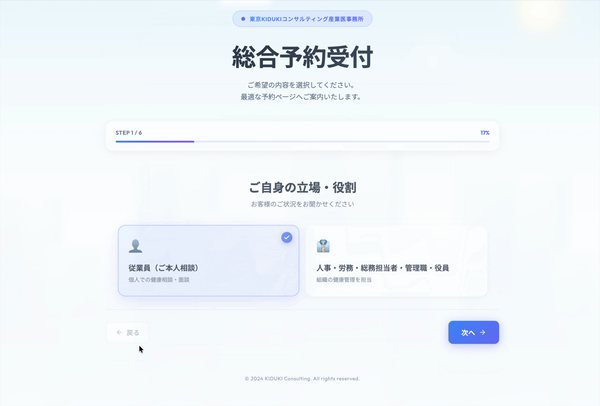

睡眠を専門とし、事業場における産業衛生業務の標準化・効率化を支援する産業医事務所
睡眠の問題は、事故・休職・生産性に関わります。国も「健康日本21（第三次）」で休養・睡眠分野の目標を掲げ、職場管理者向けの睡眠ガイドを公表しています。
居眠りや強い眠気が背景にある場合、本人の注意不足として処理すると再発します。安全配慮義務の観点でも、体制としての対応が問われます。
交代勤務では、生活リズムの乱れが不眠とメンタル不調の入口になります。シフトと仮眠環境を見直さないまま面談を重ねても、同じことが起きます。
何を実施し、どう記録すれば評価される取り組みになるのか。研修の実施報告書まで含めて設計する必要があります。
KIDUKIは、「睡眠に特化した産業医業務」と「産業衛生業務のDX」を二つの柱とする産業医事務所です。一つ目は、睡眠の専門性を日々の産業医活動に組み込むこと。二つ目は、Casetraを活用し、産業衛生業務の標準化・効率化を支援することです。
法定業務を標準化・効率化し、生まれた時間を睡眠施策や健康経営へ。
担当者は健康施策に、産業医は医学的判断に時間を使える形をつくります。
法定業務を中核に担い、睡眠の専門性を日々の産業医活動に組み込みます。睡眠が安全・健康・就業に及ぼす影響を評価し、就業上の配慮や職場の健康施策につなげます。
衛生委員会、職場巡視、健診事後措置、面接指導、復職支援などを継続して担います。
睡眠時間、眠気、生活リズム、SAS、夜勤・交代勤務の影響を確認します。
運転、危険作業、勤務時間、残業など、睡眠状態と業務の関係を評価します。
勤務条件、再評価時期、事故予防、睡眠施策として、職場で実施できる形にします。
診断と治療は医療機関が行います。必要な情報連携はご本人の同意を得て主治医と行い、当事務所は産業医として就業上の意見を述べます。特定の医療機関を受診先として指定することはありません。
KIDUKIは、睡眠に特化した産業医事務所として法定業務を中核に担い、睡眠の専門性を安全・健康・就業の評価に生かします。
睡眠に関する健康施策や、急な復職判定面談を1件から承ります。
復職判定では診断書の確認だけで終わらせず、睡眠と業務の関係を確認し、再発リスクを考慮して判断します。
睡眠という専門軸を通しながら、産業医としての法定業務を継続して担います。
長時間労働、高ストレス、復職などの面談でも睡眠状態を確認し、勤務条件と再評価時期を具体化します。
すでに産業医がいる事業場でも、睡眠評価が必要な面談を担当します。
必要な情報はご本人の同意を得て主治医と連携し、産業医として職場で必要な条件を整理します。
単発・継続のどちらも、まずは初回のご相談から承ります。
継続契約では、自社開発のCasetraを組み合わせ、予約、資料回収、記録、進捗確認を一つの流れにします。担当者の手作業を減らし、生まれた時間を睡眠施策や健康経営に使える形をつくります。
業務別に予約方法と必要資料を決め、日程調整と資料の催促を減らします。
産業医意見から会社の最終決定、職場での実施まで、誰が何を行うかを一つの手順にします。
実施後の再評価日まで追跡し、後から経緯を確認できる形で記録を保管します。

担当者は判断と健康施策に、産業医は医学的評価と意見に時間を使える形をつくります。
単発の面談・研修は、Casetraの契約なしでご依頼いただけます。
継続契約では、睡眠に特化した産業医業務とCasetraを組み合わせる形を基本にご提案します。Casetraは別契約で導入は任意ですが、利用しない場合はCasetraによるDX支援は含まれません。
Casetraについて見る（別サイト）衛生委員会
同席／議題レビュー／議事録コメント
巡視
指摘→是正→クローズ・追跡
健診事後措置
医師意見／就業配慮
長時間労働
面談（必要時）
高ストレス者
面談（必要時）
復職支援
面談・フォロー
標準化
マニュアル／運用レポート
予約・記録の運用
Casetraによる設定・管理
証跡の管理
提出できる形での保管設計
睡眠研修
実施・報告書作成
SASスクリーニング
体制設計／受診勧奨／就業措置の助言
交代勤務
シフト・仮眠環境の評価／眠気リスクの整理
宮部 大輔
内科専門医・心療内科専門医・労働衛生コンサルタント
眠りは、体と心と仕事の交差点にあります。だから、内科と心療内科と労働衛生の三つの視点で診る必要があるのです。睡眠医療の診療にも携わっており、そこで見てきたことを、産業医としての判断に活かしています。
安全衛生管理体制の立ち上げから関わった経験があります。
担当産業医のほか、代表および他の医師も相談に応じます。一人の医師に依存しない体制です。
休職・復職の判断は、センシティブな情報の扱いと法的な側面の理解が欠かせません。労働法を専門とする顧問弁護士と連携して対応します。
遠隔地の従業員の面談にも対応します。休復職者のフォロー面談などでご利用いただいています。
診断や治療を産業医事務所に求める場合
費用の安さを最優先される場合
会社としての最終決定や職場での実施まで、すべてを当事務所に委ねたい場合
訪問の回数だけで料金を決めるのではなく、お渡しする報告書と対応する範囲に応じて決めています。同じ月1回の訪問でも、記録や報告をどこまで整えるかで内容が変わるためです。
企業規模・訪問頻度・委員会の頻度・ご相談の範囲によって変わります。初回のご相談で現在の体制と必要な範囲を確認したうえで、概算をお示しします。
フォームから、睡眠の課題、単発の面談・研修、継続支援、産業衛生業務のDXについてお送りください。
内容を確認し、2営業日以内に担当医師よりご連絡します。お急ぎの場合は自動返信メールにご返信ください。
状況を伺い、単発の面談・研修または継続支援の範囲と、Casetra利用の要否をご提案します。
役割ベースのアクセス制御（必要な人に必要な範囲だけ）
証跡は所在と更新状況が追える形で整理
外部共有は原則しない（必要時は期限付き等で統制）
機微な医療情報は、同意と役割に基づき最小限で取り扱い
はい。衛生委員会、職場巡視、健診事後措置、面接指導、復職支援、ストレスチェックなどの法定業務を中核に担い、睡眠の専門性を日々の産業医活動に組み込みます。睡眠状態が安全・健康・就業に及ぼす影響を評価し、就業上の配慮や職場の健康施策につなげます。
はい。睡眠研修、睡眠に関する健康経営施策、急な復職判定面談は1件からご相談いただけます。
いたしません。受診が必要と考えられる場合にその旨をお伝えすることはありますが、医療機関はご本人がお選びになります。必要な情報連携は、ご本人の同意を得て主治医と行います。
会社としての最終決定と職場での実施は、企業側に行っていただきます。継続契約でCasetraを利用する場合は、予約、資料回収、記録、進捗確認、再評価の標準化をKIDUKIとCasetraが支援します。
手順書とチェックリスト、役割分担表をご用意します。何を誰がいつ行うかが決まっていれば、担当者が変わっても進められる形にできます。
単発の面談・研修には必要ありません。継続契約では、睡眠に特化した産業医業務とCasetraを組み合わせる形を基本にご提案します。Casetraは別契約で導入は任意ですが、利用しない場合はCasetraによるDX支援は含まれません。
お急ぎの場合は、フォーム送信後の自動返信メールに【至急】と添えてご返信ください。枠に空きがあれば、48時間以内にご相談をお受けできます。
睡眠研修、SAS対策、夜勤・運転業務の眠気対策、復職後の再評価など、事業場ごとの健康施策に使える時間を増やします。
フォームでご相談内容をお送りください。確認後、2営業日以内にご連絡します。